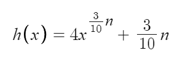
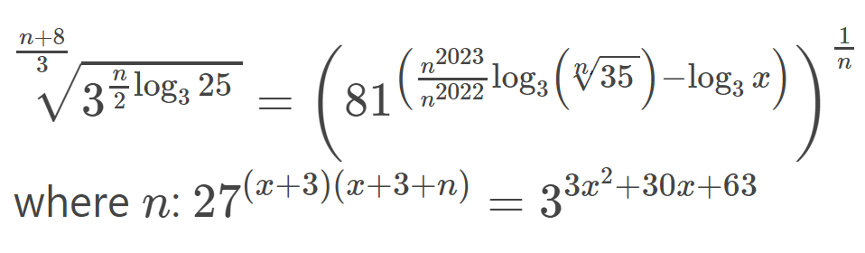
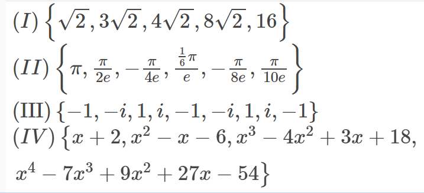

If I was to compare the first quarter of Mathematics for this grade to something, I would say the first quarter of Math for our entire journey. The topics look so easy, but they are annoyingly difficult to grasp and master. In case you have forgotten, our topics for Math for this quarter were transformations, such as translation, rotation, dilation, and rotation, and properties of different types of functions (odd and even, multiplicities, and etc).
What is g(x), the factored form of the function of this polynomial if reflected across the x-axis?
f(x) = x5 + 6x4 + 9x3 - 4x2 - 12x
Note: If you find exponents or multiplicities, write them as ^x, where x is the power, and the order of the factors doesn't matter. If a variable is not inside a binomial, enclose in parentheses. Example: (x)(x+3)^2(x+2)(x-3)^4.

Second quarter was one of the lighter quarters in my opinion, due to it only consisting of the different types of parent functions there are -- this does not mean that it was easy though, because there were so many of them. Examples of these are the rational, radical, and piecewise functions.
Before we delve into the difficult questions 3 and 4, a simple exchange between variables will be done. If the value of n is the area of the values two standard deviations within from the mean in a standard normal distribution, divided by ten rounded off to the nearest whole number (sorry), then what is the the index of the radical on the numerator of the inverse of the function below?
Third quarter was hard to get the gist of, but once you get it and it clicks, it just feels bliss. We concentrated on the concept of power -- its function forms, and its inverse as well. Topics include exponential and logarithmic functions, and equations involving these concepts as well.
What is the value of x in the equation below?
For the last quarter of math, we were taught how to find the different properties of sequences -- the first terms, common differences / ratios, and how we derived these equations to get a much better understanding of these lessons. Before all that, we were taught to distinguish specific types of sequences from another sequence.
Find the sets of numbers that is NOT a geometric or arithmetic sequence below:
It must have been tough answering those four questions above, so here's a throwback to your grade seven days. A throwback to something so important yet many students don't fully understand due to the pandemic -- factoring.
Factor out 2x2+5x+2, and give me the value of n, which is described as the product of all of the numbers you see in the factored equation, including the coefficients of the variable.